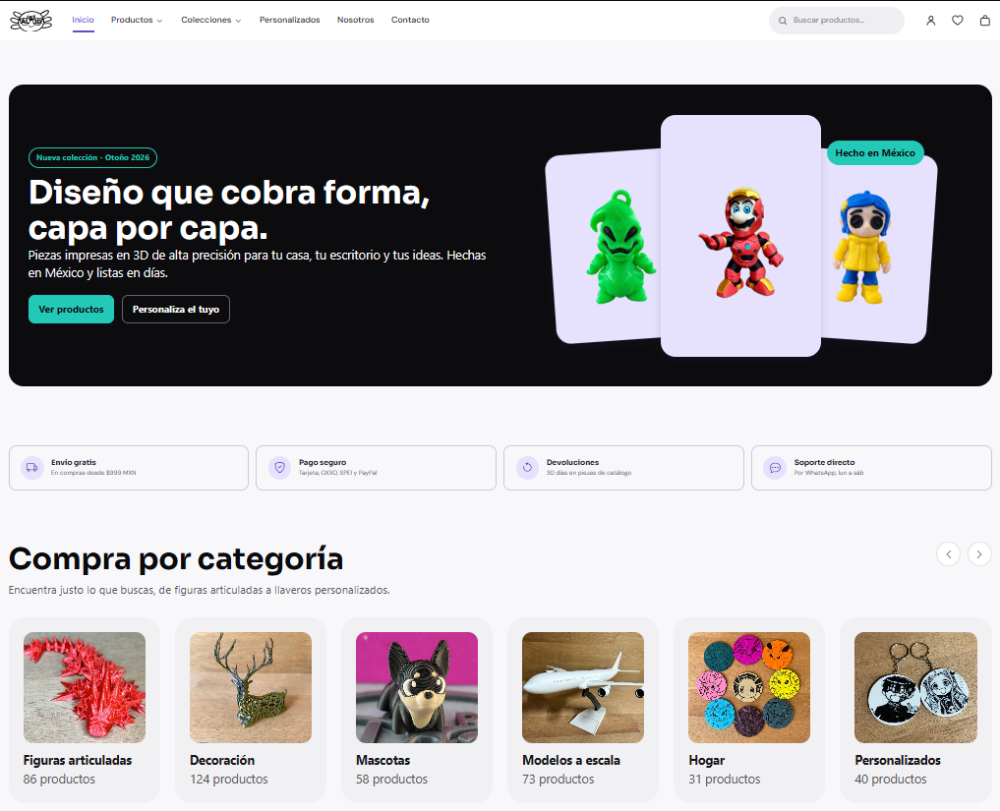
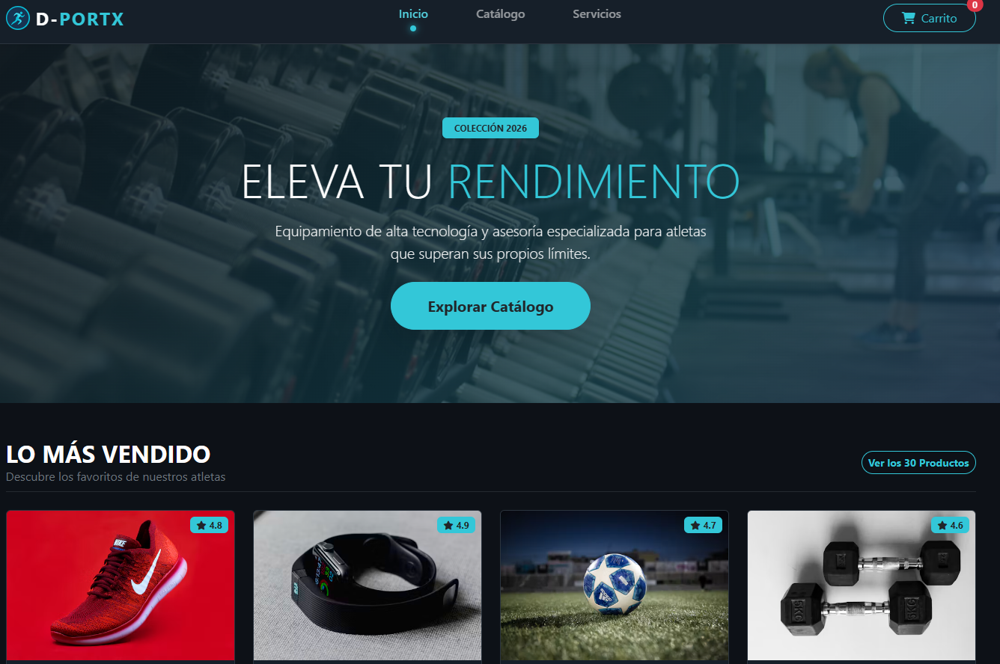
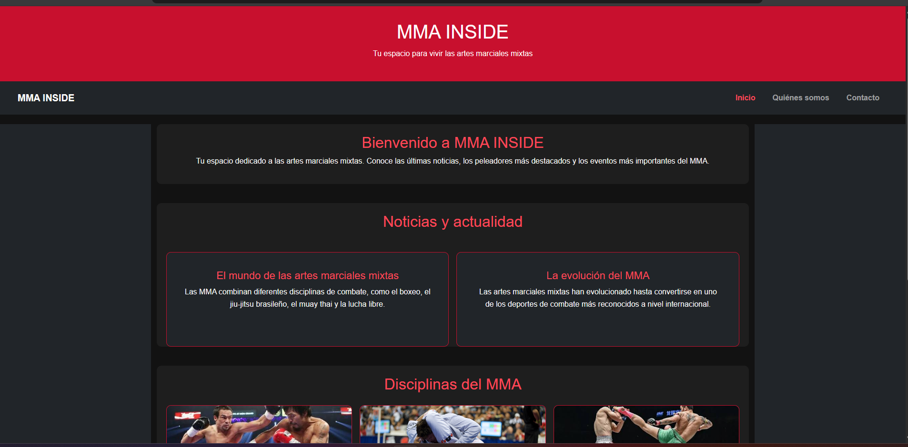

01 / E-COMMERCEIMP AL3D
Plataforma de comercio electrónico de impresión 3D que reúne frontend, lógica de negocio, bases de datos y trabajo colaborativo con metodologías ágiles.
Ver repositorio ↗✦
Hola, soy
Transformo ideas en soluciones web funcionales, combinando mis conocimientos en desarrollo de software con el pensamiento analítico y la capacidad de resolución de problemas que me brinda mi formación en ingeniería.
Una selección de trabajos realizados durante mi formación.

01 / E-COMMERCEPlataforma de comercio electrónico de impresión 3D que reúne frontend, lógica de negocio, bases de datos y trabajo colaborativo con metodologías ágiles.
Ver repositorio ↗
02 / HACKATHONPlataforma de comercio electrónico deportivo con catálogo dinámico, filtros de búsqueda y carrito interactivo, aplicando tecnologías frontend y trabajo en equipo.
Explorar en GitHub ↗
03 / BLOGProyecto web colaborativo enfocado en artes marciales mixtas, desarrollado con HTML, CSS, JavaScript y Bootstrap, priorizando el control de versiones con Git y GitHub y la organización del equipo mediante Scrum.
Explorar en GitHub ↗Las habilidades que complementan mi perfil técnico, desarrolladas a través de experiencias reales en ingeniería, automatización y desarrollo de software.
Colaboré con equipos de desarrollo bajo metodologías ágiles como Scrum, coordiné actividades con distintas áreas para resolver incidencias y alcanzar objetivos.
Generation México · G+DEnfoco mi crecimiento profesional hacia el desarrollo Full Stack, integrando mi formación en ingeniería con el aprendizaje continuo de nuevas tecnologías.
Desarrollo profesionalMe adapté a distintas tecnologías y entornos, desde sistemas electromecánicos y herramientas de fabricación digital hasta el desarrollo web.
Ibero · G+D · GenerationDiagnostiqué fallas de hardware y software, analicé incidencias técnicas y desarrollé soluciones para mejorar el funcionamiento de equipos y sistemas.
Universidad Iberoamericana · G+DCapacité y asesoré a estudiantes en herramientas tecnológicas, además de documentar incidencias y comunicar resultados técnicos a diferentes áreas.
Universidad Iberoamericana · G+DApliqué precisión en la elaboración de reportes técnicos, seguimiento de inventarios, documentación de procesos y verificación del funcionamiento de sistemas.
G+D · Universidad IberoamericanaTecnologías y herramientas que utilizo para construir soluciones web, desde la interfaz hasta la lógica y los datos.
¿Tienes una oportunidad, una idea o un proyecto en mente? Estoy interesado en colaborar, aportar soluciones y seguir creciendo profesionalmente como desarrollador Java Full Stack.
Abierto a nuevas oportunidades